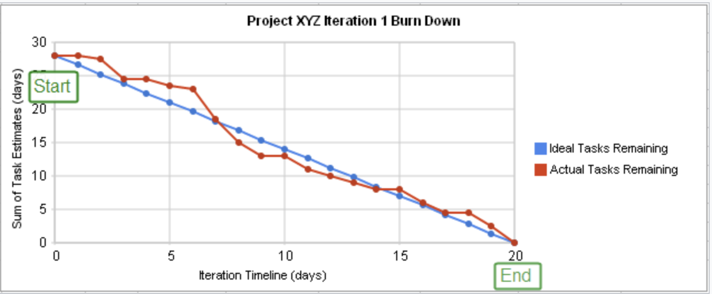

Histórico de Revisões
| Data | Versão | Descrição | Autor |
|---|---|---|---|
| 02/10/2018 | 0.1 | Criação do Documento | Arthur Diniz e Victor Moura |
1. Introdução
Este documento tem como objetivo explicitar a forma pela qual a equipe GQA utilizará o repositório, suas metodologias de gerenciamento e a localização dos artefatos produzidos. # 2. Controle de Atividades ## 2.1 Milestones
O planejamento da equipe GQA será realizado, em seu nível de abstração mais alto, por milestones. Uma milestone é um marco no ciclo de vida de um projeto. Ela indica em qual ponto no projeto haverá uma mudança de fase, uma grande entrega, ou outro evento importante.
O objetivo das milestones neste repositório é agregar todas as atividades e artefatos que devem ser feitos até uma determinada data.
As milestones serão definidas de acordo com o Plano de Ensino da Disciplina de Melhoria de Processo de Software. Novas milestones podem ser criadas de acordo com mudanças neste plano de ensino, ou de acordo com novas demandas da equipe, de maneira arbitrária.
As milestones definidas pela equipe GQA podem ser encontradas acessando-se a página de milestones do projeto. ## 2.2 Kanban
A equipe GQA irá realizar o controle de suas atividades por meio do Kanban. O Kanban é uma metodologia criada na década de 1940 pela Toyota com o objetivo de otimizar a sua produção, diminuindo o desperdício e controlando o fluxo de peças produzidas. Em software, o Kanban é utilizado para visualizar e padronizar o fluxo de trabalho dentro da equipe.
O Kanban da equipe GQA pode ser encontrado com a utilização da ferramenta Zenhub. O Zenhub é um plugin para navegadores que adiciona novas funcionalidades ao Github, como as boards, que é onde o Kanban estará localizado. ### 2.1.1 Uso do Kanban
O quadro da equipe GQA contém quatro colunas. Cada uma delas representa um possível estado de um dos itens de trabalho, que serão representados pelas issues do Github.: * **To-Do**: O item de trabalho não está sendo produzido. * **Doing**: Algum membro da equipe está trabalhando neste item. * **Review**: O item foi finalizado e está arguardando revisão por algum outro membro da equipe. * **Done**: O item foi finalizado e aprovado.
Os itens de trabalho podem ser a atividade de produção de um artefato, ou atividades genéricas a serem feitas, como análises de uma auditoria ou decisões a serem tomadas. No caso de discussões ou decisões, a própria issue deve ser utilizada como ferramenta de registrar a comunicação entre a equipe.
Quando um item de trabalho começa a ser produzido, ele deve ser movido da coluna To-Do para a coluna Doing. Ao ser finalizado, ele deve ser movido para a coluna Review, onde outro membro deve revisá-lo (no caso de um artefato). Um artefato é considerado finalizado quando está estável, o que significa que o objetivo da existência deste (descrever um processo, relatar um planejamento de uma auditoria, entre outros) foi alcançado. Após essa revisão, o item deve ser movido para a coluna Done e a issue que o representa deve ser fechada.
A produção de artefatos deve ser realizada diretamente no github, na wiki do repositório. A página do artefato deve conter um link em seu cabeçalho apontando para a issue correspondente a produção deste. De maneira análoga, a issue deve conter um link para a página do artefato. # 3. Labels
Para possibilitar a navegação fácil do repositório e identificar qual o tipo de atividade que está sendo realizada no momento, as issues da equipe GQA serão etiquetadas com a ferramenta de labels do Github. Labels são etiquetas que indicam a natureza de uma atividade, seja ela a criação de um documento de gerenciamento, a realização de uma auditoria, entre outros. A definição das labels se dá por maneira arbitrária. Toda label criada deve ter uma descrição, que indica o que ela significa.
As labels utilizadas pela equipe no período presente podem ser encontradas na página de labels do repositório. ## 4. Burn Down
Um gráfico de quebras é uma representação gráfica do trabalho a ser feito versus tempo. O excelente trabalho (ou backlog) é muitas vezes no eixo vertical, com o tempo ao longo da horizontal. Isto é, é um gráfico de execução de trabalho excepcional. É útil para prever quando todo o trabalho será concluído. É frequentemente usado em metodologias ágeis de desenvolvimento de software , como o Scrum . No entanto, os gráficos burn down podem ser aplicados a qualquer projeto que contenha progresso mensurável ao longo do tempo.  # 5. Referências Kanban - A brief introduction. Disponível em: https://www.atlassian.com/agile/kanban.